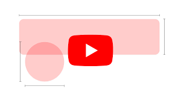

Web accessibility assists individuals with disabilities in navigating a website and accessing its content more easily by using tools like a screen reader.
By making your websites accessible, you will allow more people to interact with them, generating more traffic in the process positively.
Unfortunately, despite the World Health Organization's (WHO) estimate that 15% of the world's population has some form of disability, 70% of visited websites are severely disabled.
You will learn more about web accessibility and its significance in this article. Besides, we will tell you how to make and test an accessible site in light of global standards.
Learn how to improve your web accessibility and make your website user-friendly for everyone.
Creation
Jun 08, 2023
Sopha M.
9min Read
Using tools like a screen reader, web accessibility makes it easier for people with disabilities to navigate a website and access its content.
By making your websites accessible, you will allow more people to interact positively with them and increase traffic.
Tragically, despite the fact that the World Wellbeing Association (WHO) gauges that 15% of the total populace lives with some type of handicap, 70% of checked sites have a serious absence of openness.
In this article, you will study web availability and why it is significant. Moreover, we will tell you the best way to make and test an open site in view of global guidelines.
Figure out how to further develop your web openness and make your site simple to use for everybody.
Buy in FOR Additional Instructive Recordings!
Web openness sets out the freedom for individuals with incapacities to encounter equivalent admittance to a computerized platform.
Besides, accessibility will accommodate a superior client experience, further developing your site's Website streamlining (Web optimization) endeavors. This will assist your site with positioning higher in web search tool results pages (SERPs), expanding crowd reach.
Accordingly, web availability assists organizations with extending their market reach and increment consumer loyalty and is one of the most incredible practices for website architecture.
Keep in mind that this applies to users with temporary disabilities as well as users with situational accessibility issues. For instance, if someone is in a crowded area, they might have trouble hearing.
In the event that you're making a site on WordPress, look at the prescribed procedures for WordPress openness.
To ensure that your content and web applications have good accessibility, focus on several aspects, including user agents as well as web and writing tools.
The US has introduced the Americans with Disabilities Act (ADA) on accessibility. It ensures that all individuals should be able to use public resources, including websites. In short, it makes web accessibility a legal requirement.
Therefore, if you don't comply with it, you may face legal risks.
Non-compliance is not tolerated due to reasons such as ignorance or a website still being under web development. Hence, by creating an open and inclusive design, you can avoid the possibility of lawsuits and build a good reputation for the brand.
The Web Content Accessibility Guidelines (WCAG) provide standardization of accessible content that can meet the needs of all individuals and organizations worldwide.
Essentially, these guidelines are for web developers, especially web writing tool developers, and anyone who wants to create accessible websites.
Many countries include the WCAG 2.0 as a reference for building accessible websites in their policies since it is recognized as an ISO standard.
Furthermore, the WCAG 3 is expected, which will support a wide range of user requirements, use holistic testing, and enable ongoing maintenance of guidelines and related content to adapt to changing technologies.
The success criteria in the WCAG guidelines consist of three levels of conformance:
It means that users should be able to perceive information from the web content. For example, if they have visual impairments, the content should be accessible with assistive technology (AT), like a screen reader.
Users should be able to operate all the user interface components and navigate them with various tools. For example, if users have difficulty using the mouse, they should be able to navigate the content using the tab key on their keyboards or voice commands.
While creating web content, make it readable and predictable by using clear and simple instructions. Applying this principle will help users understand the site's workflow and avoid errors.
A variety of user agents, including mobile devices, web browsers, and AT, must be able to access robust content. In short, accessible sites cannot dictate how users should access the content.
Assessing your site when it is still in the improvement cycle to check whether it consents to the relevant guidelines is fundamental. Any issues can be distinguished before and settled all the more effectively through testing.
There are several testing tools to assist you with really taking a look at your site:
To further develop accessibility, check so that the following factors could check whether your site conforms to the WCAG guidelines.
With screen readers, Alt Text can replace images, illustrations, or charts in web content with written information for blind users. In a nutshell, all users ought to have access to the same data regardless of whether they are able to view the images.
Giving media choices, for example, text records or depictions in audio files, will assist blind clients or individuals with hearing impedances access the data on the site. A good accessibility model would add subtitles or providing an audio description for a video.
Because not everyone is able to use a mouse, it is essential to ensure that all parts of the website can be accessed using a keyboard or the AT. Site structures, for example, search boxes and site maps ought to have coherent and natural route to assist users with effectively finding what they are searching for.
It is simpler for clients with low vision to see your web content with high contrast variety present on the site. For instance, if you use a light background and a dark text color, visibility will improve. In any case, remember that each client has various abilities. Therefore, provide the option to change the variety mix of existing varieties in the internet browser. The minimum contrast required is somewhere around 4.5:1 for ordinary size text.
Open Structure
To assist a client with a handicap comprehend a web structure, ensure there is a label close to the field you believe they should tap on or type in, for instance, the structure's email address or name. Doing so will assist clients with AT figure out what to do in that field.
Moving, blazing, squinting substance, for example, promotions, recordings, merry go rounds can make issues for clients with mental weaknesses.
What's more, ensure that your page has a period limit for quickly changing substance that can be changed or switched off, to not confound clients while handling data.
Note that content that squints beyond what three times each second can cause seizures for individuals with photosensitive problems.
Because a screen reader will read the page title in addition to any content that is present, a descriptive page title can assist disabled users in navigating between various web pages. You ought to likewise markup headings to assist clients with exploring by depending on the console or AT.
Certain individuals need to expand letters or even change the textual style and line dividing while perusing. Hence, making your text zoomable without influencing the remainder of the substance will make your site more open.
Web accessibility improves your website's user experience. Many companies and organizations have implemented web accessibility practices due to various benefits, such as an expanded audience and higher rankings on SERPs (Search Engine Results Pages).
Additionally, web accessibility is also a legal requirement.
Aside from following the WCAG (Web Content Accessibility Guidelines) rules, it is essential to evaluate your website to avoid complex issues. Besides using assessment tools like WAVE and WebAim, you can manually check if your site is accessible.
To do so, consider the following factors:
Additionally, you can take online courses to learn more about web accessibility from platforms like EdX, Coursera, and Google. If you have further questions or thoughts, feel free to share them in the comments section below. Don't forget to choose the best web hosting services to ensure maximum website performance for your visitors.
/* google code */